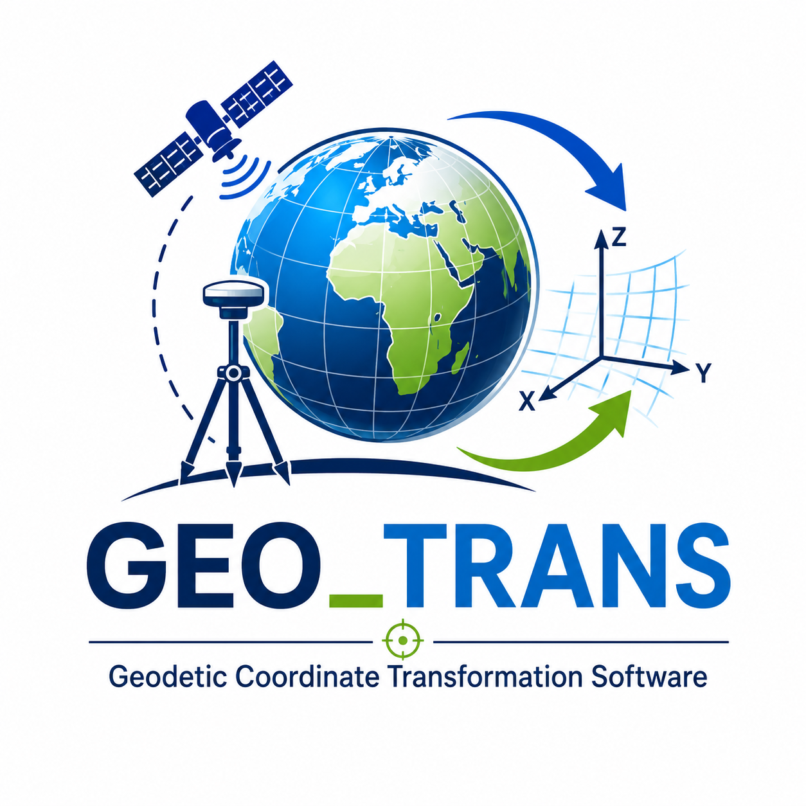

Bienvenue sur le portail officiel de GEO_TRANS.
Bibliothèque scientifique dédiée aux calculs de géodésie, aux transformations de coordonnées et aux projections cartographiques.
Helmert • Molodensky • Molodensky-Badekas • UTM • Lambert • Bonne • Vincenty • GNSS • Topographie